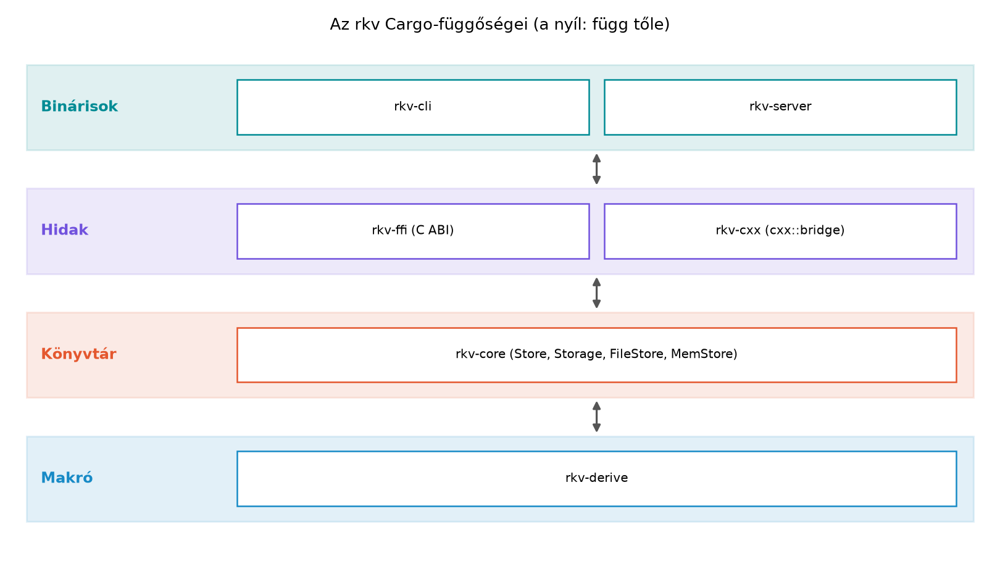

Egy C++-projekt zárásakor az átadás általában így néz ki: a CMake-listák, a tesztek, a CI-konfiguráció és a dokumentáció külön-külön rendben van, de a teljes rendszer integrációja az utolsó héten derül ki. Az rkv esetén ugyanezt a pillanatot éljük át Rustban, azzal a különbséggel, hogy a cargo workspace és a beépített tesztinfrastruktúra az integráció nagy részét már lefedi. A cél most nem új nyelvi elem megtanítása, hanem a korábbi alfejezetek eredményeinek egyetlen, átadható rendszerré gyúrása, egy API-készlettel és egy adatmodellel minden rétegen.
A korábbi laborokban elkészült a Store típus, a
Storage trait, a MemStore és
FileStore implementáció, a SharedStore, a CLI,
a tokio-szerver, a C ABI-s FFI, a proc-macro crate és a cxx-hídon
keresztül elérhető C++-kliens. A záróprojekt ezeket a darabokat
egységesíti, teszteli, méri és dokumentálja. C++-ban a Catch2/GoogleTest
+ CMake + CTest + clang-tidy kombináció a szokásos; Rustban ezt a
cargo test, clippy, fmt és adott
esetben a Miri váltja ki, szorosabban a nyelvbe integrálva.
Az rkv átvételi követelményei konkrét, mérhető feltételek. A listát a Tesztelés és dokumentáció, a C++-együttműködés és a Naplózás és megfigyelhetőség alfejezetek eredményeiből állítjuk össze:
Storage traites
MemStore és FileStore átmegy a generikus
szerződésteszten; a FileStore adatai SET/DEL, újranyitás és
kompaktálás után is ugyanabban az állapotban állnak helyre.GET,
SET, DEL, LIST [<prefix>]
parancsai működnek a szerveren és a CLI-n keresztül; a LIST
keretezése minden rétegen azonos.SharedStore szálbiztos, a terheléses teszt nem okoz
holtpontot vagy adatvesztést.cargo fmt --check,
cargo clippy -- -D warnings, cargo test,
cargo doc --no-deps, valamint az rkv-ffi
unsafe részeire a Miri futtatása sikeres.RUSTDOCFLAGS="-D warnings" cargo doc --no-deps --workspace:
törött intra-doc hivatkozás hiba), és a doc-tesztek lefutnak. A
missing_docs lintet nem kényszerítjük ki:
bekapcsolva az rkv-core 51, az rkv-server 9
hiányzó dokumentációs figyelmeztetést ad, ezért a „minden publikus elem
dokumentált” állítás nincs igazolva; ez nyitott, kézi vizsgálatot
igénylő pont.Követhetőségi mátrix. Minden követelményhez
nevesített ellenőrzés tartozik. A „Típus” oszlop szerint
automatikus az, amit a scripts/accept.sh (lásd
lent) futtat; kézi az, ami emberi vizsgálat vagy külön eszköz.
Egy tesztnév a cargo test … -- --exact szűrővel pontosan
1 tesztet kell futtasson, mert a nulla teszt is
ok-val és 0-s kilépési kóddal végződik
(running 0 tests, 1 filtered out), vagyis egy
elírt névvel a követelmény látszólag teljesülne.
| # | Követelmény | Ellenőrzés (csomag · teszt) | Típus |
|---|---|---|---|
| 1 | MemStore a szerződésen |
rkv-core ·
memstore_satisfies_storage_contract |
automatikus |
| 1 | FileStore a szerződésen |
rkv-core ·
filestore_satisfies_storage_contract |
automatikus |
| 1 | Újranyitás és kompaktálás után azonos állapot | rkv-core ·
state_survives_reopen_and_compaction
(restore_state) |
automatikus |
| 2 | LIST szűrés és keretezés a szerveren |
rkv-server ·
server_list_prefix_returns_filtered_pairs
(list_prefix) |
automatikus |
| 3 | Szálbiztos SharedStore |
rkv-core ·
shared_store_works_across_threads,
file_backend_survives_concurrent_writers |
automatikus |
| 4 | Híd Rust-oldali szerződése | rkv-cxx ·
tests::contract_holds_on_the_rust_side |
automatikus |
| 4 | Kapcsolatlimit a szerveren | rkv-server ·
connection_limit_rejects_the_excess_client |
automatikus |
| 4 | C++ kliens a generált hídon | acceptance.cpp fordítása és futtatása (g++, lásd a C++
átvételi teszt) |
kézi / külön parancs |
| 5 | fmt, clippy, test, doc | a 4. lépés parancsai, kilépési kód 0 | automatikus (parancs) |
| 5 | Miri az rkv-ffi-n |
cargo +nightly miri test -p rkv-ffi |
kézi / külön parancs |
| 6 | rustdoc, doctestek | RUSTDOCFLAGS="-D warnings" cargo doc --no-deps --workspace;
cargo test --doc --workspace |
automatikus (parancs) |
| 6 | Teljes dokumentáltság | nincs kikényszerítve (missing_docs
figyelmeztetések) |
kézi, nyitott |
Kódblokk — fájl: scripts/accept.sh · művelet:
új fájl a workspace gyökerében · ellenőrzés:
bash scripts/accept.sh → minden sor OK,
kilépési kód 0
#!/usr/bin/env bash
# Átvételi mátrix: minden sor egy nevesített teszt, pontosan 1 futott és 1 sikeres.
set -u
fail=0
check() { # <követelmény> <csomag> <tesztcél: --lib | --test NÉV> <teszt teljes neve>
local req=$1 pkg=$2 target=$3 name=$4 out
# shellcheck disable=SC2086
out=$(cargo test -p "$pkg" $target -- --exact "$name" 2>&1)
if grep -q "1 passed; 0 failed" <<<"$out"; then
echo "OK [$req] $pkg $name"
else
echo "FAIL [$req] $pkg $name (nem futott pontosan 1 sikeres teszt)"; fail=1
fi
}
check 1 rkv-core "--test memstore" memstore_satisfies_storage_contract
check 1 rkv-core "--test filestore" filestore_satisfies_storage_contract
check 1 rkv-core "--test restore_state" state_survives_reopen_and_compaction
check 2 rkv-server "--test list_prefix" server_list_prefix_returns_filtered_pairs
check 3 rkv-core "--test shared" shared_store_works_across_threads
check 3 rkv-core "--test shared_backends" file_backend_survives_concurrent_writers
check 4 rkv-cxx "--lib" tests::contract_holds_on_the_rust_side
check 4 rkv-server "--test server" connection_limit_rejects_the_excess_client
exit $failEllenőrzött eredmény (Rust 1.99.1): a szkript a nyolc sorra
OK-t ír és 0-val lép ki; a
RUSTDOCFLAGS="-D warnings" cargo doc --no-deps --workspace
figyelmeztetés nélkül lefut. A segédmodul
(tests/common/mod.rs, assert_storage_contract)
hívói a memstore.rs és a filestore.rs (lásd Tesztelés és dokumentáció); az 1. követelmény két
első sora ezen át fut. A Miri és a C++ teszt ebben a szkriptben nincs,
azokat külön, a lenti lépésekben futtatjuk.
A rendszer rétegei:

A nyilak a Cargo-függőség irányát jelölik: a felső
réteg a közvetlenül alatta lévőtől függ ([dependencies]). A
Cargo.toml függőséglistája ebből egyértelműen felírható:
rkv-cli → rkv-core; rkv-server →
rkv-core; rkv-ffi → rkv-core;
rkv-cxx → rkv-core; rkv-core →
rkv-derive (path-függőség). A makró crate
(rkv-derive) nem függ az rkv-core-tól: a
derive által generált kód az ::rkv_core::CommandName
útvonalat nevezi meg, de ez a használó crate-ben oldódik fel, nem
Cargo-függőség. A fizikai mappaszerkezet (a tagok egymás melletti
könyvtárai) nem azonos ezzel a függőségi gráffal.
A rétegábra azt mutatja, hogy az rkv-core a rendszer
magja: minden más crate ezt használja, egyetlen kivétellel a
rkv-derive, amely a Command levezetett
CommandName implementációját adja az
rkv-core-nak. A C++-kliens az rkv-cxx
crate-ből generált bridge-en keresztül beszél a Rust tárolóval – ez az a
határ, ahol a C++-os kényelem és a Rust-biztonság találkozik.
A záróprojekt egyetlen adatmodellt használ minden rétegen. A korábbi
vázlatok szöveges (String) értékeket és tabulátoros
snapshotot említettek; ezek nem részei a végleges
rendszernek.
| Réteg | Döntés |
|---|---|
| kulcs | String (a tárolóban tetszőleges UTF-8, a protokollban
nem üres, szóköz- és vezérlőkarakter-mentes) |
| érték | Vec<u8>: tetszőleges bájtsorozat, a tárolás
veszteségmentes |
Storage trait |
get(&str) -> Result<Option<Vec<u8>>>,
set(String, Vec<u8>) -> Result<()>,
delete(&str) -> Result<bool>,
list(Option<&str>) -> Result<Vec<(String, Vec<u8>)>>
(kulcs szerint rendezve) |
| tárolási formátum, v1 | snapshot: egyetlen JSON-objektum
{"data":{kulcs:[bájtok...]}}; napló: soronként egy
JSON-rekord ({"Set":{"key":..,"value":[..]}} vagy
{"Delete":{"key":..}}), \n-nel lezárva |
| hálózati protokoll | egyetlen szöveges protokoll soronként egy paranccsal:
GET k, SET k v, DEL k,
LIST [prefix] |
LIST keretezés |
soronként VALUE <kulcs> <érték>, a végén
egy OK sor; a CLI, a szerver és a C++ átvételi teszt
ugyanezt a keretezést használja |
| értékek a protokollban | UTF-8 szöveg sortörés nélkül; tetszőleges bájtokhoz a
command modul
encode_value/decode_value hexa kódolása (a
tárolt bájtok így is veszteségmentesek) |
Formátumverzió és kompatibilitás. A fenti tárolási
formátum a 1-es verzió, amelyet a fájlokban nem
jelölünk külön mezővel. Régebbi fájlok nincsenek: a tabulátoros
snapshot, amelyet egy korai vázlat említett, soha nem készült el. Ha a
formátum változik, a snapshot kap egy version mezőt
(#[serde(default)], hiányában 1-es), a napló pedig új
fájlnevet; az ismeretlen verziót a FileStore::open hibával
utasítja el, és nem próbálja kitalálni. A protokollban a keretezés
szabálya: a kliens a VALUE sorokat a lezáró OK
sorig olvassa; a szerver nem zárja le a kapcsolatot egy parancs
után.
A tartóssági modell ugyanaz, mint az I/O és
szerializáció: fájlok, pufferelés, serde alfejezetben: Linux, helyi
POSIX-fájlrendszer (ext4, XFS), a gyorsítótár-ürítést betartó háttértár.
A FileStore snapshot + hozzáfűzéses naplóval tárol. Az
alábbi invariánsok adják a szerződést; a teljes, végleges forráskód
lejjebb következik.
\n) kiíródott, és a
flush és a sync_data sikerült. A memóriabeli
állapotot csak ezután módosítjuk
(self.data.insert/remove).poisoned jelzőt kap, és minden
további írást elutasít, amíg újra nem nyitjuk: félkész rekord mögé nem
írunk vakon. A hiba Error::Io.Ok-t, ezért eldobjuk és a fájlt
levágjuk; egy sorvégjellel lezárt, de nem értelmezhető rekord valódi
sérülés, hibát adunk.sync_all-lal lemezre kényszerítjük, rename-mel
atomikusan lecseréljük, a szülőkönyvtárat szinkronizáljuk, és
csak ezután csonkoljuk a naplót. Összeomlás után a
lemezen vagy a régi snapshot és a teljes napló, vagy az új snapshot és a
teljes vagy üres napló marad; a napló rekordjainak újrajátszása az új
snapshotra a végállapotot nem változtatja meg.Store/FileStore belül nem
szinkronizál: a módosító metódusok &mut self-et
kapnak, az alkalmazás kizárólagos tulajdonosa az adatnak. A szálak közti
megosztást egyetlen helyen, a SharedStore külső
Mutex-e adja; a lekérdezések owned
(Vec<u8>) eredményt adnak, mert a zár elengedése után
hivatkozás nem élhetne tovább. A kizárólagos fájlmegnyitást a
naplófájlra tett try_lock kényszeríti ki.Kódblokk — fájl:
rkv-core/src/store/file_store.rs · művelet: a teljes
végleges forrás (a tesztmodul nélkül; a tesztek az I/O és szerializáció: fájlok, pufferelés, serde és
a Teljesítmény: mérés, profilozás, allokáció,
release-beállítások laborjaiban vannak) · ellenőrzés:
cargo test -p rkv-core
use serde::{Deserialize, Serialize};
use std::collections::HashMap;
use std::fs::{self, File, OpenOptions, TryLockError};
use std::io::{self, BufRead, BufReader, BufWriter, Write};
use std::path::{Path, PathBuf};
use crate::{Error, Result};
#[derive(Debug, Clone, Serialize, Deserialize)]
struct Snapshot {
data: HashMap<String, Vec<u8>>,
}
#[derive(Debug, Clone, Serialize, Deserialize)]
enum LogEntry {
Set { key: String, value: Vec<u8> },
Delete { key: String },
}
/// Kölcsönzött naplórekord: ugyanazt a JSON-t írja, mint a `LogEntry`, de nem másol.
#[derive(Serialize)]
enum LogEntryRef<'a> {
Set { key: &'a str, value: &'a [u8] },
Delete { key: &'a str },
}
/// Kölcsönzött snapshot: a `Snapshot` JSON-alakja, a térkép másolása nélkül.
#[derive(Serialize)]
struct SnapshotRef<'a> {
data: &'a HashMap<String, Vec<u8>>,
}
pub struct FileStore {
data: HashMap<String, Vec<u8>>,
log_writer: BufWriter<File>,
snapshot_path: PathBuf,
/// Egy sikertelen naplóírás után igaz: a tároló nem fogad több írást.
poisoned: bool,
}
impl FileStore {
pub fn open(snapshot_path: impl AsRef<Path>, log_path: impl AsRef<Path>) -> Result<Self> {
let snapshot_path = snapshot_path.as_ref().to_path_buf();
let log_path = log_path.as_ref();
// Kizárólagos használat: a naplófájlra tett zár miatt egyszerre csak
// egy FileStore (egy folyamat) írhatja a tárolót. A zár a fájl
// lezárásakor, a FileStore eldobásakor oldódik fel.
let log_file = OpenOptions::new()
.create(true)
.append(true)
.open(log_path)?;
match log_file.try_lock() {
Ok(()) => {}
Err(TryLockError::WouldBlock) => {
return Err(Error::Io(io::Error::new(
io::ErrorKind::WouldBlock,
"a tárolót már egy másik FileStore használja",
)));
}
Err(TryLockError::Error(e)) => return Err(e.into()),
}
let mut data = HashMap::new();
if snapshot_path.exists() {
let file = File::open(&snapshot_path)?;
let reader = BufReader::new(file);
let snap: Snapshot = serde_json::from_reader(reader)?;
data = snap.data;
}
let valid_len = replay_log(log_path, &mut data)?;
if log_file.metadata()?.len() > valid_len {
// Csonka (nem commitolt) utolsó rekord levágása, hogy az új
// bejegyzések ne félkész sor mögé kerüljenek.
log_file.set_len(valid_len)?;
log_file.sync_all()?;
}
let log_writer = BufWriter::new(log_file);
Ok(Self {
data,
log_writer,
snapshot_path,
poisoned: false,
})
}
pub fn get(&self, key: &str) -> Option<&[u8]> {
self.data.get(key).map(Vec::as_slice)
}
pub fn set(&mut self, key: String, value: Vec<u8>) -> Result<()> {
self.append_entry(&LogEntryRef::Set {
key: &key,
value: &value,
})?;
// Csak a tartós naplórekord után módosul a memóriabeli állapot.
self.data.insert(key, value);
Ok(())
}
pub fn delete(&mut self, key: &str) -> Result<()> {
if !self.data.contains_key(key) {
return Ok(());
}
self.append_entry(&LogEntryRef::Delete { key })?;
self.data.remove(key);
Ok(())
}
fn ensure_healthy(&self) -> Result<()> {
if self.poisoned {
return Err(std::io::Error::other(
"a napló egy korábbi írási hiba óta sérült; nyisd meg újra a tárolót",
)
.into());
}
Ok(())
}
/// Commit-szerződés: a teljes rekord (JSON + '\n') kiírása, flush és
/// sync_data. Csak Ok esetén szabad a memóriabeli állapotot módosítani.
fn append_entry(&mut self, entry: &LogEntryRef<'_>) -> Result<()> {
self.ensure_healthy()?;
let mut line = serde_json::to_vec(entry)?;
line.push(b'\n');
let res = self
.log_writer
.write_all(&line)
.and_then(|()| self.log_writer.flush())
.and_then(|()| self.log_writer.get_ref().sync_data());
if let Err(e) = res {
// A pufferben vagy a fájlban félkész rekord maradhatott:
// vakon nem folytatjuk a naplózást.
self.poisoned = true;
return Err(e.into());
}
Ok(())
}
pub fn list(&self, prefix: Option<&str>) -> Vec<(String, Vec<u8>)> {
let mut items: Vec<_> = self
.data
.iter()
.filter(|(k, _)| prefix.is_none_or(|p| k.starts_with(p)))
.map(|(k, v)| (k.clone(), v.clone()))
.collect();
items.sort_by(|a, b| a.0.cmp(&b.0));
items
}
pub fn save_snapshot(&mut self) -> Result<()> {
self.ensure_healthy()?;
let tmp_path = self.snapshot_path.with_extension("json.tmp");
// A File::create az ideiglenes fájlt nullázza le, a régi snapshotot nem.
let file = File::create(&tmp_path)?;
let mut writer = BufWriter::new(file);
serde_json::to_writer(&mut writer, &SnapshotRef { data: &self.data })?;
writer.flush()?;
writer.get_ref().sync_all()?; // 1. az új tartalom a lemezen van
drop(writer);
fs::rename(&tmp_path, &self.snapshot_path)?; // 2. atomikus csere
sync_parent_dir(&self.snapshot_path)?; // 3. maga a csere is tartós
Ok(())
}
pub fn compact(&mut self) -> Result<()> {
self.save_snapshot()?; // 1–3. lépés: az új snapshot tartós
// 4. Csak ezután dobható el a napló.
let log = self.log_writer.get_mut();
log.set_len(0)?;
log.sync_all()?;
Ok(())
}
}
/// POSIX-on a rename a szülőkönyvtár szinkronizálása után tartós.
#[cfg(unix)]
fn sync_parent_dir(path: &Path) -> Result<()> {
let dir = match path.parent() {
Some(p) if !p.as_os_str().is_empty() => p,
_ => Path::new("."),
};
File::open(dir)?.sync_all()?;
Ok(())
}
#[cfg(not(unix))]
fn sync_parent_dir(_path: &Path) -> Result<()> {
// Nem POSIX-platformon könyvtár így nem szinkronizálható; lásd a
// tartóssági modellt a labor után.
Ok(())
}
/// Visszajátssza a naplót, és visszaadja az utolsó teljes rekord végének
/// bájtpozícióját.
fn replay_log(path: &Path, data: &mut HashMap<String, Vec<u8>>) -> Result<u64> {
let file = match File::open(path) {
Ok(f) => f,
Err(e) if e.kind() == std::io::ErrorKind::NotFound => return Ok(0),
Err(e) => return Err(e.into()),
};
let mut reader = BufReader::new(file);
let mut line = Vec::new();
let mut valid_len = 0u64;
loop {
line.clear();
let n = reader.read_until(b'\n', &mut line)?;
if n == 0 || line.last() != Some(&b'\n') {
// Fájl vége, vagy sorvégjel nélküli csonka rekord: ez utóbbi
// sosem kapott Ok-t, mert az append_entry a teljes sort írja.
break;
}
valid_len += n as u64;
if line.trim_ascii().is_empty() {
continue;
}
// A sorvégjellel lezárt, de hibás rekord valódi sérülés: hiba.
let entry: LogEntry = serde_json::from_slice(&line)?;
match entry {
LogEntry::Set { key, value } => {
data.insert(key, value);
}
LogEntry::Delete { key } => {
data.remove(&key);
}
}
}
Ok(valid_len)
}A Storage trait, amelyet a MemStore és a
FileStore egyaránt implementál:
Kódblokk — fájl: rkv-core/src/storage.rs ·
művelet: a trait definíciója (a fájl eleje) · ellenőrzés:
cargo check -p rkv-core
use std::path::Path;
use crate::{Command, Error, FileStore, MemStore, Result};
/// Kulcs–érték tároló absztrakció: a parancsok végrehajtásához szükséges
/// műveletek. A kulcs `String`, az érték `Vec<u8>` (r007).
pub trait Storage {
fn get(&self, key: &str) -> Result<Option<Vec<u8>>>;
fn set(&mut self, key: String, value: Vec<u8>) -> Result<()>;
/// `true`, ha a kulcs létezett.
fn delete(&mut self, key: &str) -> Result<bool>;
/// A `prefix`-szel kezdődő párok kulcs szerint rendezve.
fn list(&self, prefix: Option<&str>) -> Result<Vec<(String, Vec<u8>)>>;
}A szándékosan hibás sorrend gyakori hiba: a napló törlése a snapshot előtt.
// Szándékosan HIBÁS: a napló elveszik, ha a snapshot írása közben hiba lép fel.
fn bad_compact(&mut self) -> Result<()> {
self.log_writer.get_mut().set_len(0)?; // a napló már üres...
self.save_snapshot()?; // ...a snapshot pedig még nem tartós
Ok(())
}Ha a save_snapshot hibával tér vissza, a napló már üres,
a snapshot pedig nem frissült: adatvesztés. A javítás a sorrend
megfordítása: először tartós snapshot, utána napló-csonkolás, ahogy a
compact teszi. A Rust ? operátora a hibát
explicit teszi, de a logikai sorrendet a fordító nem ellenőrzi; ez a
tervező felelőssége, mint C++-ban a kivételbiztossági garanciáké.
A LIST [<prefix>] a prefixszel kezdődő kulcsokat
adja vissza, a C++ std::map::lower_bound-jához hasonlóan.
Definíció. A prefix-lekérdezés a kulcsok rendezett
halmazában a megadott string-prefixszel kezdődő kulcsok halmaza.
A BTreeMap<String, _> a std::map
Rust-megfelelője: rendezett, önkiegyensúlyozó fa. A prefixszel kezdődő
kulcsok a rendezett sorrendben egy összefüggő sávot alkotnak, amely a
prefix helyén kezdődik. A helyes lekérdezés alulról zárt, felül nyitott
tartománnyal (prefix..) indul, és addig olvas
(take_while), amíg a kulcsok a prefixszel kezdődnek. Felső
határt számolni nem érdemes. Egy kis kulcshalmazon végigvezetve (a
kulcsok bájtonkénti rendezése: a < ab <
abc < az < a{ <
a\u{10FFFF} < a\u{10FFFF}x <
b, mert a { kódja 0x7B, nagyobb,
mint a z kódja 0x7A):
Kódblokk — fájl: src/main.rs (önálló
cargo new projekt) · művelet: teljes csere · ellenőrzés:
cargo run
use std::collections::BTreeMap;
use std::ops::Bound::{Excluded, Included, Unbounded};
fn main() {
let mut map = BTreeMap::new();
for key in ["a", "ab", "abc", "az", "a{", "a\u{10FFFF}", "a\u{10FFFF}x", "b"] {
map.insert(key.to_string(), ());
}
let keys = |it: &mut dyn Iterator<Item = &String>| -> Vec<String> { it.cloned().collect() };
println!("rendezés: {:?}", map.keys().collect::<Vec<_>>());
// Helyes: alulról zárt, felül nyitott, és addig olvas, amíg a prefix egyezik.
let ok = keys(&mut map.range("a".to_string()..).map(|(k, _)| k).take_while(|k| k.starts_with("a")));
println!("range(\"a\"..) + take_while: {ok:?}");
// Alsó határ: Included tartalmazza a prefix-szel egyenlő kulcsot, Excluded nem.
let incl = keys(&mut map.range((Included("a".to_string()), Unbounded)).map(|(k, _)| k).take_while(|k| k.starts_with("a")));
let excl = keys(&mut map.range((Excluded("a".to_string()), Unbounded)).map(|(k, _)| k).take_while(|k| k.starts_with("a")));
println!("alsó Included: {incl:?}\nalsó Excluded: {excl:?}");
// Rossz felső korlát: prefix + 'z'
let bad_z = keys(&mut map.range("a".to_string()..="az".to_string()).map(|(k, _)| k));
println!("rossz: \"a\"..=\"az\": {bad_z:?}");
let bad_z_excl = keys(&mut map.range("a".to_string().."az".to_string()).map(|(k, _)| k));
println!("rossz: \"a\"..\"az\": {bad_z_excl:?}");
// Rossz felső korlát: prefix + char::MAX
let max = format!("a{}", char::MAX);
let bad_max = keys(&mut map.range("a".to_string()..=max.clone()).map(|(k, _)| k));
println!("rossz: \"a\"..=\"a\\u{{10FFFF}}\": {bad_max:?}");
let bad_max_excl = keys(&mut map.range("a".to_string()..max).map(|(k, _)| k));
println!("rossz: \"a\"..\"a\\u{{10FFFF}}\": {bad_max_excl:?}");
}Ellenőrzött kimenet:
rendezés: ["a", "ab", "abc", "az", "a{", "a\u{10ffff}", "a\u{10ffff}x", "b"]
range("a"..) + take_while: ["a", "ab", "abc", "az", "a{", "a\u{10ffff}", "a\u{10ffff}x"]
alsó Included: ["a", "ab", "abc", "az", "a{", "a\u{10ffff}", "a\u{10ffff}x"]
alsó Excluded: ["ab", "abc", "az", "a{", "a\u{10ffff}", "a\u{10ffff}x"]
rossz: "a"..="az": ["a", "ab", "abc", "az"]
rossz: "a".."az": ["a", "ab", "abc"]
rossz: "a"..="a\u{10FFFF}": ["a", "ab", "abc", "az", "a{", "a\u{10ffff}"]
rossz: "a".."a\u{10FFFF}": ["a", "ab", "abc", "az", "a{"]Tanulságok: (1) a helyes range("a"..) mind a hét
a-val kezdődő kulcsot megtalálja, a b-t nem;
minden kulcs pontosan egyszer szerepel, az iterátor nem duplikál, mert a
térkép kulcsai egyediek. (2) Az alsó határ inkluzivitása számít: a
Included("a") a magát a prefixet (a "a"
kulcsot) is tartalmazza, az Excluded("a") nem. (3) A felső
határ viszont mindig hibás: a "a"..="az" kihagyja az
a{, az a\u{10FFFF} és az
a\u{10FFFF}x kulcsot; a "a".."az" az
az-t is; a char::MAX-os felső határ
(prefix + '\u{10FFFF}') a …x farkú kulcsot
hagyja ki, és az exkluzív változat a char::MAX-ot
tartalmazót is. Ezért a felső határt a starts_with
ellenőrzés adja, nem egy kiszámított kulcs. Az rkv
Store::range_prefix ezt valósítja meg (a részletes indoklás
és a tesztek a Vec, HashMap, BTreeMap és társaik; az
Entry API laborjában vannak); a FileStore
HashMap-et tart, ezért ott a list szűr és
rendez.
A szerver válasza a LIST app parancsra:
LIST app
VALUE app::1 x
VALUE app::2 y
OKHa a prefix üres, az összes kulcsot listázza. A keretezés minden
rétegen ugyanez: a OK sor mindig lezárja a választ (üres
találatnál egyedül áll).
Munkakönyvtár: ~/rust-labor/rkv/
A labor a korábbi alfejezetek eredményeire támaszkodik, és egyetlen,
végleges API-készletre hozza őket. Ha bármelyik crate hiányzik, a
cargo new parancsokkal pótolható, de a cél most az
ellenőrzés és a véglegesítés.
A közös edition, rust-version és
version a [workspace.package] táblába kerül, a
tagok örökölik. Az edition nem lehet a
[workspace] táblában: ott a Cargo ismeretlen kulcsként
ignorálja
(warning: unused manifest key: workspace.edition), és a
tagok editionje a hiányzó mező miatt 2015 lenne. A
virtuális workspace-nek nincs saját editionje, ezért a függőségfeloldót
(resolver = "3", a 2024-es edition alapértelmezése)
explicit adjuk meg.
Kódblokk — fájl: Cargo.toml · művelet: teljes
csere (workspace gyökér) · ellenőrzés:
cargo metadata --no-deps → minden tag
edition: 2024, figyelmeztetés nélkül
[workspace]
resolver = "3"
members = [
"rkv-core",
"rkv-cli",
"rkv-server",
"rkv-ffi",
"rkv-cxx",
"rkv-derive",
]
[workspace.package]
version = "0.1.0"
edition = "2024"
rust-version = "1.89"
license = "MIT OR Apache-2.0"
publish = false # tanulóprojekt: nem kerül a crates.io-raKódblokk — fájl: rkv-core/Cargo.toml,
rkv-cli/Cargo.toml, rkv-server/Cargo.toml,
rkv-ffi/Cargo.toml, rkv-cxx/Cargo.toml,
rkv-derive/Cargo.toml · művelet: a [package]
tábla version, edition,
rust-version, license és publish
soraiban az értékek helyett örökítés · ellenőrzés:
cargo metadata --no-deps
[package]
name = "rkv-core"
version.workspace = true
edition.workspace = true
rust-version.workspace = true
license.workspace = true
publish.workspace = true(Ha valaki nem akarja az örökítést, az alternatíva: minden tag
[package] táblájában külön edition = "2024"; a
mellékelt r002/r003 laborok ezt használták.)
Az rkv-derive proc-macro crate, az rkv-cxx a
cxx-build miatt, az rkv-ffi a
cbindgen miatt speciális; a rkv-cli a
clap-et, a rkv-server a tokio-t
és a tracing-et használja.
A záróprojekt nem ír át semmit önkényesen: az alábbi változások mind a korábbi alfejezetek labor-lépései. Ha az olvasó az előző állapotból indul, ezeket kell alkalmaznia.
| Réteg | Végleges állapot | Hol készült |
|---|---|---|
Store, FileStore |
get/get_by →
Option<&[u8]>, #[must_use];
FileStore kölcsönzött naplórekorddal és snapshottal |
API-tervezés, Teljesítmény |
Storage, SharedStore |
owned Result<Option<Vec<u8>>>; a
szinkronizáció a SharedStore Mutex-e |
Mutex, RwLock, csatornák és a megosztott rkv |
Command, Error |
#[non_exhaustive]; a Command
protokollnevét a CommandName derive adja
(Delete → DEL) |
Makrók, API-tervezés Rustban: irányelvek és ergonómia |
rkv-cli |
execute: _ => "ERR unsupported command"
ág a non_exhaustive miatt; std::str::from_utf8
másolás nélkül |
API-tervezés Rustban: irányelvek és ergonómia |
rkv-server |
run_server(listener, SharedStore, token),
ServerConfig::builder(), session modul |
Az rkv hálózati szerver: TCP, protokoll, kecses leállás–API-tervezés Rustban: irányelvek és ergonómia |
rkv-ffi |
RkvStore (benne SharedStore),
catch_unwind (unwind profil) |
C ABI: extern “C”, repr(C), bindgen és cbindgen |
rkv-cxx |
rkv::Db híd (open_file, get,
list, …), Logger |
C++-együttműködés a cxx crate-tel és a fokozatos migráció |
| profil | [profile.release]: lto = "fat",
codegen-units = 1, panic marad
unwind |
Teljesítmény: mérés, profilozás, allokáció, release-beállítások |
Állapot helyreállítása. Ez a teszt a perzisztencia-követelményt ellenőrzi: SET/DEL, újranyitás, kompaktálás, újabb írás és újabb újranyitás után ugyanaz az állapot álljon helyre.
Kódblokk — fájl:
rkv-core/tests/restore_state.rs · művelet: új fájl ·
ellenőrzés: cargo test -p rkv-core --test restore_state → 1
sikeres teszt
//! Átvételi teszt: SET/DEL, újranyitás és kompaktálás után ugyanaz az állapot áll helyre.
use rkv_core::{FileStore, Storage};
fn snapshot_of(store: &FileStore) -> Vec<(String, Vec<u8>)> {
Storage::list(store, None).unwrap()
}
#[test]
fn state_survives_reopen_and_compaction() {
let dir = tempfile::tempdir().unwrap();
let (snap, log) = (dir.path().join("state.json"), dir.path().join("append.log"));
let expected = {
let mut store = FileStore::open(&snap, &log).unwrap();
store.set("app::1".into(), b"x".to_vec()).unwrap();
store.set("app::2".into(), vec![0, 255, 10]).unwrap(); // tetszőleges bájtok
store.set("szóköz kulcs".into(), b"y".to_vec()).unwrap();
store.set("torolt".into(), b"z".to_vec()).unwrap();
store.delete("torolt").unwrap();
store.set("app::1".into(), b"x2".to_vec()).unwrap(); // csere
snapshot_of(&store)
};
assert_eq!(expected.len(), 3);
// 1. Újranyitás: a naplóból (snapshot nélkül) ugyanaz az állapot áll helyre.
let mut store = FileStore::open(&snap, &log).unwrap();
assert_eq!(snapshot_of(&store), expected);
// 2. Kompaktálás: snapshot + üres napló; a tartalom változatlan.
store.compact().unwrap();
assert_eq!(snapshot_of(&store), expected);
drop(store);
// 3. Újranyitás a snapshotból, majd új írás a kompaktált napló mögé, és megint újranyitás.
let mut store = FileStore::open(&snap, &log).unwrap();
assert_eq!(snapshot_of(&store), expected);
store.set("uj".into(), b"w".to_vec()).unwrap();
drop(store);
let store = FileStore::open(&snap, &log).unwrap();
let mut with_new = expected.clone();
with_new.push(("uj".into(), b"w".to_vec()));
with_new.sort();
assert_eq!(snapshot_of(&store), with_new);
}Szerver-integráció. A teszt az
rkv-server átadott
run_server(listener, store, token) függvényét hívja
változtatás nélkül; a tempfile a
[dev-dependencies] része, a tokio és a
tokio-util függőség.
Kódblokk — fájl:
rkv-server/tests/list_prefix.rs · művelet: új fájl ·
ellenőrzés: cargo test -p rkv-server --test list_prefix → 1
sikeres teszt
use std::io;
use std::time::Duration;
use rkv_core::{FileStore, SharedStore};
use rkv_server::run_server;
use tokio::io::{AsyncBufReadExt, AsyncWriteExt, BufReader};
use tokio::net::{TcpListener, TcpStream};
use tokio::time::timeout;
use tokio_util::sync::CancellationToken;
#[tokio::test]
async fn server_list_prefix_returns_filtered_pairs() {
let dir = tempfile::tempdir().unwrap();
let mut file_store =
FileStore::open(dir.path().join("state.json"), dir.path().join("append.log")).unwrap();
file_store.set("app::1".into(), b"x".to_vec()).unwrap();
file_store.set("app::2".into(), b"y".to_vec()).unwrap();
file_store.set("other".into(), b"z".to_vec()).unwrap();
let store = SharedStore::new(file_store);
let listener = TcpListener::bind("127.0.0.1:0").await.unwrap();
let addr = listener.local_addr().unwrap();
let token = CancellationToken::new();
// Az átadott `run_server` változtatás nélkül: (listener, tároló, token).
let server = tokio::spawn(run_server(listener, store, token.clone()));
// A szerver egy kapcsolaton több parancsot kezel, ezért nem EOF-ig olvasunk:
// a VALUE sorokat a lezáró OK sorig gyűjtjük.
let exchange = async {
let stream = TcpStream::connect(addr).await?;
let (read_half, mut write_half) = stream.into_split();
write_half.write_all(b"LIST app\n").await?;
let mut lines = BufReader::new(read_half).lines();
let mut values = Vec::new();
while let Some(line) = lines.next_line().await? {
if line == "OK" {
return Ok(values);
}
values.push(line);
}
Err(io::Error::new(
io::ErrorKind::UnexpectedEof,
"a LIST válasza OK nélkül ért véget",
))
};
let result = timeout(Duration::from_secs(5), exchange).await;
// A szervert minden kimenetelnél leállítjuk és megvárjuk, csak utána értékelünk.
token.cancel();
timeout(Duration::from_secs(10), server)
.await
.expect("a szerver nem állt le határidőn belül")
.expect("a szervertask pánikolt");
let values = result
.expect("a LIST válasza 5 s alatt nem érkezett meg")
.expect("I/O-hiba a LIST közben");
assert_eq!(values, vec!["VALUE app::1 x", "VALUE app::2 y"]);
}A teszt külső időkorlát nélkül sem akadhat el: a hálózati csere és a
szerver leállása is határidős, a server.await pedig
garantálja, hogy a teszt végén nem fut háttértask.
C++ átvételi teszt. A teszt a ténylegesen
generált hídra épül: az rkv-cxx bridge
rkv::Db, rkv::Entry és
rust::Error típusait használja, ugyanazt a
lib.rs.h fejlécet, amelyet a C++-együttműködés a cxx crate-tel és a fokozatos
migráció labor cargo build-je előállít. A kapcsolat: a
build.rs a src/lib.rs bridge-éből generálja a
target/cxxbridge/rkv-cxx/src/lib.rs.h fejlécet és a
lib.rs.cc forrást (a logger.cc-vel együtt a
rkv-cxx-glue könyvtárba), a Cargo a staticlib
típusból target/release/librkv_cxx.a-t állít elő, a C++
fordító pedig a -I target/cxxbridge -I . útvonalakkal
találja meg a fejlécet és a rkv-cxx/include/logger.h-t.
Kódblokk — fájl: cpp-client/acceptance.cpp ·
művelet: új fájl · ellenőrzés: az alábbi parancsok
// C++ átvételi teszt: a rkv-cxx generált hídján keresztül ellenőrzi a közös szerződést.
#include "rkv-cxx/src/lib.rs.h"
#include <cassert>
#include <cstdint>
#include <iostream>
#include <string>
namespace {
rust::Slice<const std::uint8_t> bytes(const std::string& s) {
return {reinterpret_cast<const std::uint8_t*>(s.data()), s.size()};
}
std::string text(const rust::Vec<std::uint8_t>& v) {
return std::string(v.begin(), v.end());
}
// A szerver és a CLI LIST-keretezése: soronként `VALUE <kulcs> <érték>`, a végén `OK`.
std::string list_frame(rkv::Db& db, const std::string& prefix) {
std::string out;
for (const rkv::Entry& e : db.list(prefix)) {
out += "VALUE " + std::string(e.key) + " " + text(e.value) + "\n";
}
return out + "OK\n";
}
} // namespace
int main(int argc, char** argv) {
assert(argc == 2 && "használat: acceptance <üres adatkönyvtár>");
const std::string dir = argv[1];
{
rust::Box<rkv::Db> db = rkv::open_file(dir);
db->set("app::1", bytes("x"));
db->set("app::2", bytes("y"));
db->set("other", bytes("z"));
assert(text(db->get("app::1")) == "x");
assert(db->count("app") == 2);
assert(db->count("") == 3);
assert(list_frame(*db, "app") == "VALUE app::1 x\nVALUE app::2 y\nOK\n");
// Hiányzó kulcs: rust::Error kivétel, nem üres érték.
bool threw = false;
try {
(void)db->get("nincs");
} catch (const rust::Error& e) {
threw = std::string(e.what()).find("nem található") != std::string::npos;
}
assert(threw);
db->del("other");
assert(db->count("") == 2);
} // a Box eldobása felszabadítja a tárolót (és a fájlzárat)
// Újranyitás: az állapot a folyamaton belül is megmarad a FileStore-ban.
rust::Box<rkv::Db> reopened = rkv::open_file(dir);
assert(reopened->count("") == 2);
assert(text(reopened->get("app::2")) == "y");
std::cout << "C++ client acceptance test passed\n";
return 0;
}Kódblokk — fájl: terminál (workspace gyökér) · művelet:
tiszta környezetben generálás, fordítás és futtatás · ellenőrzés:
C++ client acceptance test passed, kilépési kód 0
cargo build -p rkv-cxx --release
g++ -std=c++17 -Wall -Wextra -I target/cxxbridge -I . \
cpp-client/acceptance.cpp target/release/librkv_cxx.a \
-lpthread -ldl -lm -o cpp-client/acceptance
./cpp-client/acceptance "$(mktemp -d)"(Az assert-ek az NDEBUG nélkül aktívak; ne
fordítsd -DNDEBUG-gel.) A CMake/corrosion változat a C++-együttműködés alfejezet vázlata, amelyet nem
futtattunk: a szerzői környezetben nincs CMake. A fenti g++
parancsok viszont végig lefutottak.
A workspace gyökeréből:
cargo fmt --all -- --check
cargo clippy --workspace --all-targets --all-features -- -D warnings
cargo test --workspace
cargo doc --no-deps --workspaceHa a fmt --check az első futtatáskor a kézzel másolt
laborkódon eltérést jelez, a cargo fmt --all igazítja azt;
a kapu lényege, hogy a végleges fában tiszta. A
cargo test --workspace futtatja a rkv-core
generikus szerződéstesztjét és perzisztenciatesztjeit, a szerver
protokoll- és leállási tesztjeit, a session doctesteket és
a szálbiztossági teszteket.
Ellenőrzött eredmény (Rust 1.99.1):
cargo fmt --all -- --check tiszta;
cargo clippy --workspace --all-targets --all-features -- -D warnings
figyelmeztetés nélkül lefut; cargo test --workspace 93
tesztet futtat hiba nélkül; cargo doc --no-deps --workspace
figyelmeztetés nélkül lefut.
Az rkv-ffi unsafe kódot tartalmaz. A Miri futtatása a C
ABI-nál:
cargo +nightly miri test -p rkv-ffiEllenőrzött eredmény: a két teszt zöld, undefined behavior nélkül. A
Miri az rkv-cxx crate-re nem használható értelmesen: a C++
oldalra átlépő hívásokat (idegen függvényeket) nem tudja értelmezni; ott
a C++ átvételi teszt és a szokásos sanitizerek (ASan/UBSan a C++
oldalon) a megfelelő eszközök. A Miri a nightly toolchaint igényli. Az
unsafe blokkokban a // SAFETY: megjegyzéseknek
jelen kell lenniük, és a Miri által talált hibákat javítani kell.
Ellenőrzési pont. A workspace-en a
cargo fmt --all -- --check, a
cargo clippy --workspace --all-targets --all-features -- -D warnings,
a cargo test --workspace és a
cargo doc --no-deps --workspace hibátlanul lefut; a
restore_state, a list_prefix és a C++
acceptance teszt zöld; a
cargo +nightly miri test -p rkv-ffi undefined behavior
nélkül fut; a cargo metadata --no-deps minden tagra
2024-es editiont mutat.
A minőségkapuk a fenti parancsok. A tipikus hibák és átállási csapdák ebben a fázisban:
Drop-ban akarunk I/O-t végezni.
C++-ban a destruktorok gyakran írnak fájlt vagy zárnak kapcsolatot;
Rustban a Drop nem adhat vissza Result-ot, és
a pánikolás a Drop-ban abortához vezethet. A mentést
explicitté kell tenni (save_snapshot,
compact), a Drop csak erőforrás-lezárásra
való.cargo test nem fedez fel. C++-ban a sanitizereknek felel
meg; Rustban ez az egyik legerősebb eszköz az unsafe kód
ellenőrzésére.-D warnings túl szigorúnak
tűnik. A clippy lintjei gyakran konkrét Rust-idiómát
javasolnak; a -D warnings arra kényszerít, hogy az
API-tervezés és a kódbeli minták a API-tervezés
Rustban alfejezetben tanult elveket kövessék.prefix..=prefix + z vagy + char::MAX kulcsok
kihagynak prefixszel kezdődő kulcsokat; a
take_while(starts_with) az egyetlen megbízható határ.edition a [workspace]
táblában. Néma hiba: a Cargo figyelmeztet, de a tagok editionje
2015 lesz.Az átvett rendszer további irányai:
async modell és a tokio
csatornák erre jól illenek.tokio-rustls crate-tel a
TCP-szerver TLS-t kapna.no_std-s
rkv-core változat a Beágyazott Rust
kitekintés alfejezetben bemutatott embedded-hal és
Embassy eszközökkel élne.Fogalmi kérdés. A compact metódus
sorrendje: tartós snapshot, csak utána a napló csonkolása. Sorolj fel
három lehetséges összeomlási pontot, és mondd meg mindegyiknél, mit lát
a következő FileStore::open. Miért nem működik a fenti
bad_compact?
C++-kód átírása Rustra. Adott egy C++ függvény,
amely egy std::map<std::string, std::string> elemei
közül a megadott prefixszel kezdődő kulcsokat gyűjti ki. Valósítsd meg
idiomatikus Rustban a BTreeMap range
metódusával, kulcsok klónozása nélkül, amíg lehet.
Implementációs feladat az rkv-ban. Valósítsd meg
az automatikus kompaktálást: a FileStore kapjon egy
set_compact_threshold(bytes: u64) metódust (a küszöb
mértékegysége a commitolt napló mérete bájtban), és ha
a napló ezt átlépi, a következő sikeres
set/delete hívja a compact-ot.
Írj tesztet kicsi küszöbbel: lépd át a küszöböt, vizsgáld meg, hogy a
snapshot létrejött, hogy a napló sosem nőtt a küszöb és egy rekord
összege fölé, és hogy az újranyitás után az állapot
változatlan.
Hibajavítás, refaktorálás. A
SharedStore::lock a mérgezett zárat a
PoisonError::into_inner-rel használja tovább. Mikor helyes
ez, és mikor nem? Mit kell a tárolónak garantálnia, és hogyan védi ezt a
FileStore?
Három pont: (a) a snapshot ideiglenes fájlba írása közben: a lemezen
a régi snapshot és a teljes napló van, az ideiglenes fájl kósza; a
nyitás a régi állapotot adja; (b) a rename után, de a
naplócsonkolás előtt: új snapshot és teljes napló; a napló rekordjainak
újrajátszása az új snapshotra a végállapotot nem változtatja (a
Set/Delete idempotens), így ugyanaz az állapot
áll helyre; (c) a csonkolás után: új snapshot és üres napló. A
bad_compact fordított sorrendje a (b)-nél rosszabb
helyzetet engedne: a napló törlése után, a snapshot tartóssága előtti
összeomláskor a régi snapshot és a (már üres) napló maradna, és a
legutóbbi írások elvesznének.
A C++:
std::vector<std::pair<std::string, std::string>>
list_prefix(const std::map<std::string, std::string>& map, const std::string& prefix) {
std::vector<std::pair<std::string, std::string>> result;
auto it = map.lower_bound(prefix);
while (it != map.end() && it->first.rfind(prefix, 0) == 0) {
result.emplace_back(*it);
++it;
}
return result;
}A Rust-megfelelő:
use std::collections::BTreeMap;
fn list_prefix<'a>(
map: &'a BTreeMap<String, String>,
prefix: &str,
) -> impl Iterator<Item = (&'a str, &'a str)> {
let prefix = prefix.to_owned();
map.range(prefix.clone()..)
.take_while(move |(k, _)| k.starts_with(&prefix))
.map(|(k, v)| (k.as_str(), v.as_str()))
}Az iterátor kölcsönzött &str párokat ad, nem klónoz;
a hívó dönt arról, kell-e tulajdonolt másolat.
A FileStore két új mezőt kap, a küszöböt és a napló
aktuális méretét; az append_entry a commitolt rekord
hosszával növeli, a compact nullázza. A set és
a delete a memória módosítása után hívja a
maybe_compact-ot, tehát a kompaktálás sosem előzi meg a
commitot.
Kódblokk — fájl:
rkv-core/src/store/file_store.rs · művelet: változtatások
az alábbi helyeken · ellenőrzés:
cargo test -p rkv-core --test auto_compact
// a struktúrában
/// A napló jelenlegi mérete bájtban (a commitolt rekordok összege).
log_len: u64,
/// Ennél nagyobb napló esetén a `set`/`delete` után automatikus kompaktálás (bájt).
compact_threshold: Option<u64>,
// az open() végén: log_len: valid_len, compact_threshold: None
/// Kompaktálási küszöb bájtban: ha a commitolt napló ennél nagyobb, a következő
/// sikeres `set`/`delete` kompaktál. Ha a kompaktálás hibázik, az iménti írás
/// attól még tartós; a hiba a következő írásnál újra próbálkozik.
pub fn set_compact_threshold(&mut self, bytes: u64) {
self.compact_threshold = Some(bytes);
}
fn maybe_compact(&mut self) {
if self.compact_threshold.is_some_and(|limit| self.log_len > limit) {
let _ = self.compact();
}
}
// set()/delete(): a memória módosítása után: self.maybe_compact();
// append_entry(): a sikeres kiírás után: self.log_len += line.len() as u64;
// compact(): a naplócsonkolás után: self.log_len = 0;A let _ = self.compact() tudatos döntés: a kompaktálás
hibája nem teszi érvénytelenné az éppen commitolt írást (a napló
továbbra is a teljes igazság), ezért az írás Ok-t ad, a
következő írás pedig újra próbálkozik. Ha a hívó látni akarja a hibát, a
compact() explicit hívható.
Kódblokk — fájl: rkv-core/tests/auto_compact.rs
· művelet: új fájl · ellenőrzés:
cargo test -p rkv-core --test auto_compact → 1 sikeres
teszt
use rkv_core::{FileStore, Storage};
#[test]
fn compaction_triggers_at_the_threshold_and_keeps_the_state() {
let dir = tempfile::tempdir().unwrap();
let (snap, log) = (dir.path().join("state.json"), dir.path().join("append.log"));
let log_len = || std::fs::metadata(&log).unwrap().len();
let mut store = FileStore::open(&snap, &log).unwrap();
store.set_compact_threshold(200); // bájt: néhány rekord után átlépjük
assert!(!snap.exists());
let mut max_len = 0;
for i in 0..20u8 {
store.set(format!("k{i}"), vec![i]).unwrap();
max_len = max_len.max(log_len());
}
store.delete("k3").unwrap();
// Volt kompaktálás: snapshot létrejött, és a napló sosem nőtt a küszöb + egy rekord fölé.
assert!(snap.exists());
assert!(max_len <= 200 + 64, "a napló túl nagyra nőtt: {max_len}");
assert!(log_len() < max_len);
// A visszaállított állapot a kompaktálás nélküli elvárással egyezik.
let expected: Vec<(String, Vec<u8>)> = {
let mut v: Vec<_> = (0..20u8).filter(|&i| i != 3).map(|i| (format!("k{i}"), vec![i])).collect();
v.sort();
v
};
assert_eq!(Storage::list(&store, None).unwrap(), expected);
drop(store);
let store = FileStore::open(&snap, &log).unwrap();
assert_eq!(Storage::list(&store, None).unwrap(), expected);
}A teszt a feladat összes pontját ellenőrzi: kicsi, bájtban megadott küszöb (200), a küszöb átlépése (20 rekord), a snapshot létrejötte, a napló korlátos mérete és az újranyitás utáni azonos állapot.
A mérgezett Mutex azt jelzi, hogy egy szál a zár
birtokában pánikolt. Folytatni akkor helyes, ha a védett adat invariánsa
a pánik után is érvényes, vagy ha a tároló maga védi azt. A
SharedStore ezért engedi tovább a belső értéket
(PoisonError::into_inner), és a védelmet a
Storage implementációra bízza: a FileStore a
sikertelen naplóírás után poisoned jelzőt állít, és minden
további írást elutasít, a memóriát pedig csak a tartós rekord után
módosítja. Ez nem ad védelmet minden pánikra (például egy félig
lefutott, nem naplózott módosításra egy saját Storage-ban);
ott a hiba propagálása a biztonságosabb választás.
A hibák protokollválaszra képezése a szerverben ténylegesen így
működik: a process_line a tárolóhibát
ERR <üzenet> sorrá alakítja (egysorosra szűrve), a
kapcsolatkezelő a választ kiírja és ürít (reply), majd a
kapcsolat nyitva marad, és a következő parancsot
dolgozza fel. Ha a blokkoló feladat maga pánikol
(JoinError), a válasz ERR internal error, a
kapcsolat ekkor is folytatódik. A zárat a
SharedStore::apply tartja, kizárólag a parancs
végrehajtásának idejére, a spawn_blocking feladatban;
hálózati I/O alatt (.await fölött) soha nem él őr.
A záróprojekt az rkv workspace-t teljes rendszerként adja át,
egyetlen adatmodellel (String kulcs,
Vec<u8> érték), veszteségmentes JSON-alapú tárolási
formátummal (v1) és egyetlen szöveges protokollal, egységes
LIST keretezéssel (VALUE … sorok, záró
OK). Az rkv-core Storage traites
MemStore és FileStore típusai a snapshot +
hozzáfűzéses napló mechanizmussal perzisztálnak (WAL-sorrend: tartós
rekord, utána memória; kompaktálás: tartós snapshot, utána
naplócsonkolás). A LIST prefix-lekérdezés a
BTreeMap::range alulról zárt tartományát és a
take_while(starts_with) felső határt használja. A workspace
közös edition/rust-version értékét a
[workspace.package] táblából örökli. Az átvételi tesztek az
állapot-helyreállítási tesztre, a szerver run_server-t
változtatás nélkül hívó integrációs tesztjére és a ténylegesen generált
cxx-hídra épülő C++ tesztre támaszkodnak. A minőségkapuk:
cargo fmt --check,
cargo clippy -- -D warnings,
cargo test --workspace, cargo doc --no-deps,
valamint az rkv-ffi unsafe részeire a Miri nightly alatt.
Továbbvitt eredmény: az Összefoglalás: C++→Rust fordítási kézikönyv és
továbbtanulás összefoglaló ezt az átvételi állapotot és a
minőségkapuk eredményét használja kiindulópontként a C++→Rust fordítási
kézikönyvhöz.
cargo fmt --check, clippy -D warnings,
cargo test --workspace: 93 teszt,
cargo doc --no-deps), a három átvételi teszt
(restore_state, list_prefix, a C++
acceptance), a 3. feladat automatikus kompaktálása
(auto_compact), a cargo metadata editionjei, a
[workspace]-beli edition figyelmeztetése, a
BTreeMap::range kimenete és a Miri az
rkv-ffi-n.rkv-cxx-en (idegen C++ hívások), hosszú ideig futó
terheléses és összeomlás-injektáló tesztek.cargo miri parancs pontos szintaxisa és a Miri által
ellenőrzött garanciák a current nightly dokumentációban ellenőrizendők;
a stabil toolchainen nem érhető el.cxx-build által generált header elérési útja
(target/cxxbridge/<crate>/src/lib.rs.h) a crate
verziójától függhet.tempfile crate 3-as főverzióját használjuk; a pontos
alverziót a Cargo.lock rögzíti.